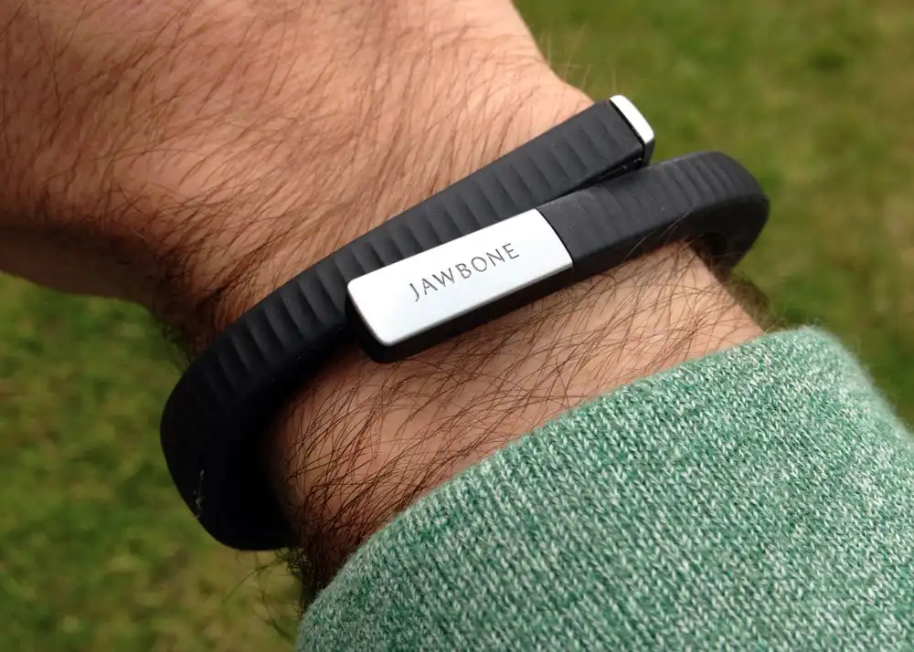

Vinod Khosla is a name that carries significant weight in the world of technology. As the founder of Khosla Ventures, a venture capital firm, he has played a critical role in the development of many groundbreaking technologies.
Khosla's career in technology began in 1982 when he co-founded Sun Microsystems, a company that played a vital role in the development of multimedia technology. During his time at Sun Microsystems, Khosla helped develop and market the company's first workstation, which was designed for engineers and scientists. He also played a critical role in the creation of etwork File System (NFS) N, a technology that allows computers to share files across multiple computers and networks. NFS was a revolutionary breakthrough that significantly advanced the development of the internet.
After leaving Sun Microsystems in 1986, Khosla turned his attention to venture capital. He co-founded Kleiner Perkins, a venture capital firm, and later established his own firm, Khosla Ventures, in 2004. Through his investments in companies like Google, Juniper Networks, and Square, Khosla continued to have an important impact on the technology industry.
But Khosla's contributions to the technology industry do not end there. He has been a strong advocate for renewable energy and has invested in a number of companies that are working on clean energy solutions. He has also been a vocal supporter of artificial intelligence and machine learning, recognizing their potential to transform the world.
 One of the multimedia and technology companies that he invested in is Jawbone. "The Jawbone UP24 represented the apex of those early, step-focused fitness trackers. Alongside the Fitbit Flex and the Nike+ FuelBand range, the stylish UP24 heralded the true beginning of the connected self era. For many, it was their first wearable technology purchase, beyond a digital watch. It's part of the enduring legacy of wearable tech that it was possibly the first truly wearable fitness tracker. It sparked the wearable tech industry we enjoy today - and Wareable wouldn't exist without it." (Smith, 2019)”
Advocates for renewable energy and AI, investing in transformative solutions.
Khosla's investments in technology have had a significant impact on the industry as a whole. He has invested in companies across a wide range of sectors, from cloud computing to mobile technology, and his contributions have helped bring innovative products and services to market . As an Information Technology student, technology enthusiast and avid user of digital devices, I appreciate the impact that Vinod Khosla has had on the development of the industry and the opportunities he has created for users like me.